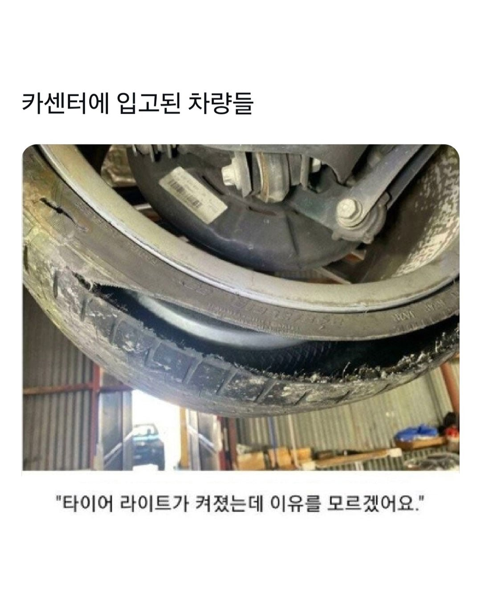
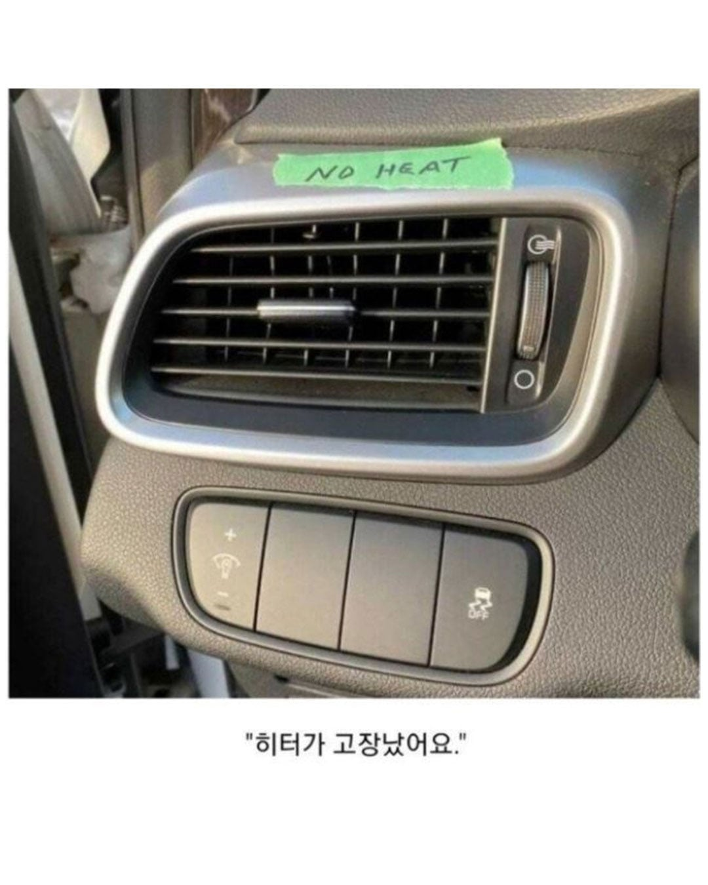
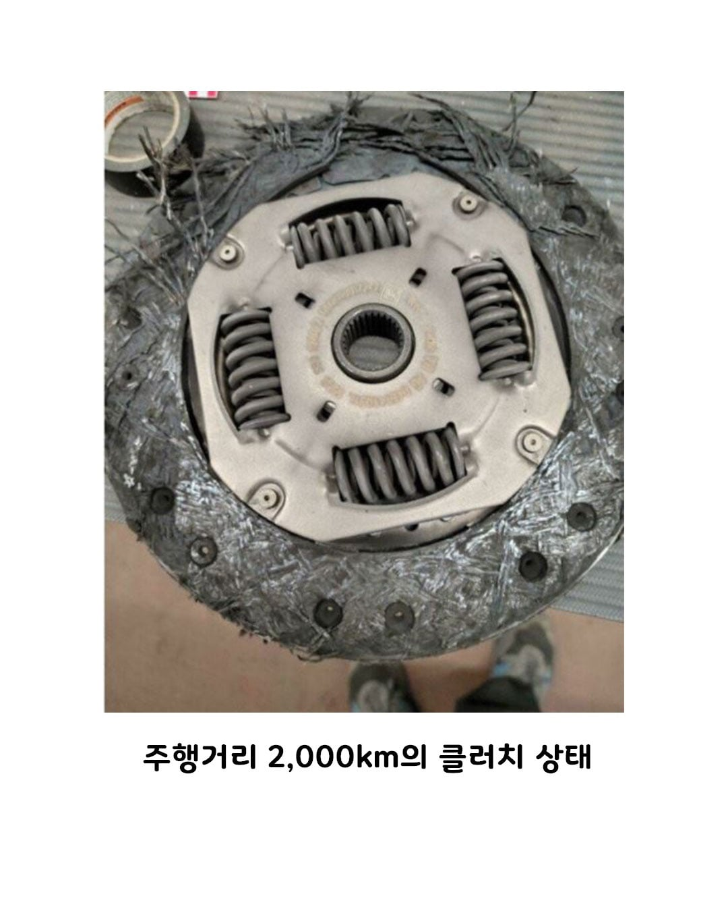
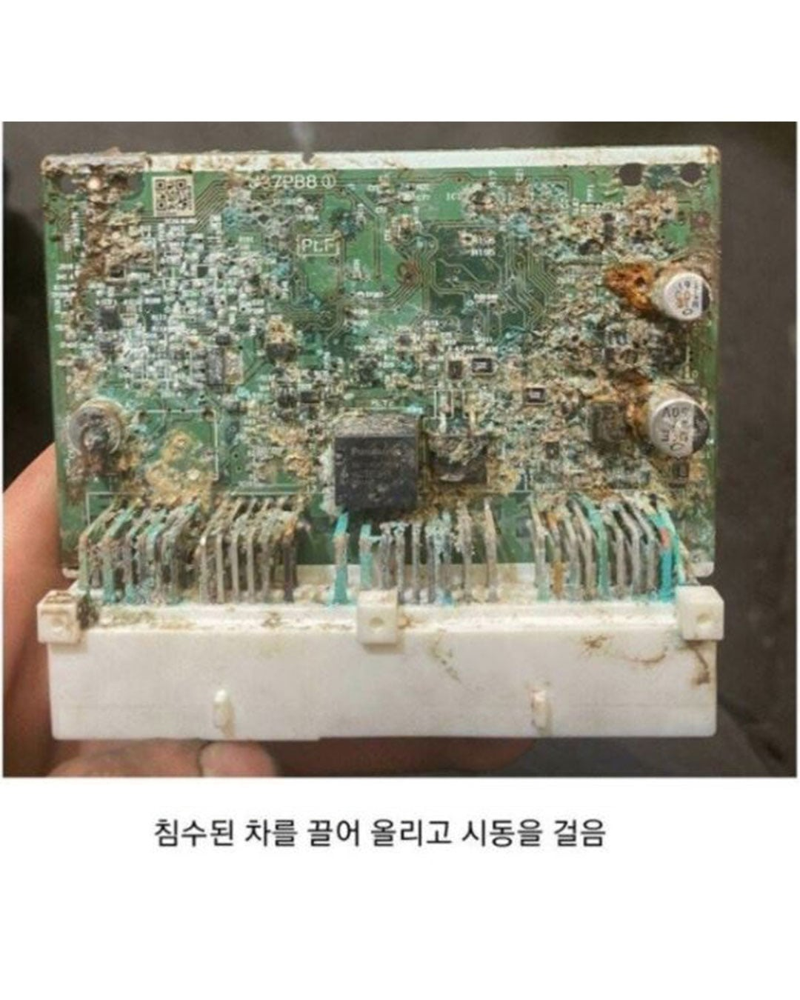
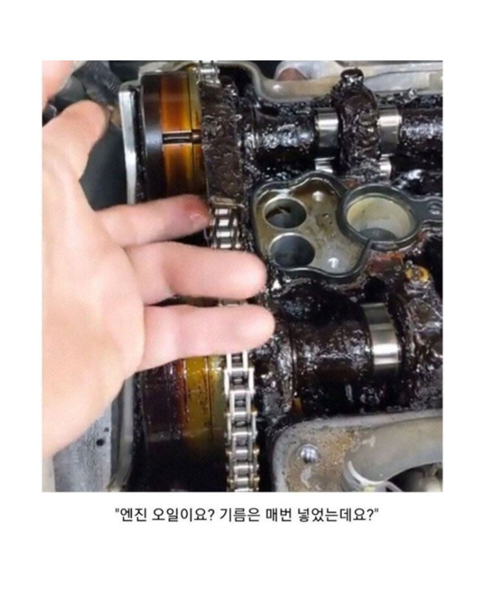
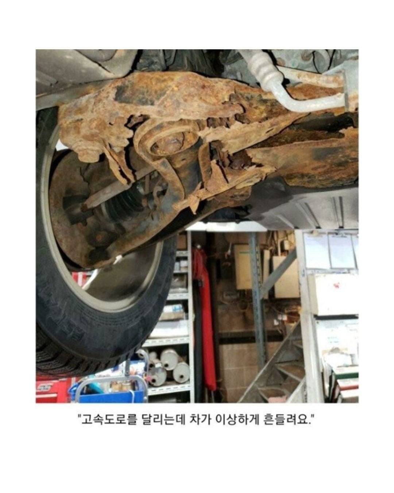

70 · 49 · 2 시간 전 · 원문






수집 당시 댓글 4개
지하왕국 · 14 일 전
지금 사고나서 렌트 타고 있는데 국물류 정비 하긴 하겠지? 15000km 정도 달린 차 받았는데 그냥 갑자기 궁금하네 1년에 한 번 교환할까? 아니면 만키로마다 교환할까
IUJOA · 14 일 전
말 그대로 운전'만' 할줄 아는 사람들이 진짜 많음
전설의호두껍질 · 14 일 전
면허시험에 기초적인 자동차 정비도 시험 과목에 넣어야된다고 생각함
시라누이Q · 14 일 전
좀 버려라
지금 사고나서 렌트 타고 있는데 국물류 정비 하긴 하겠지? 15000km 정도 달린 차 받았는데 그냥 갑자기 궁금하네 1년에 한 번 교환할까? 아니면 만키로마다 교환할까